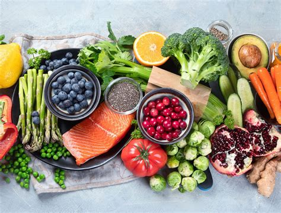

Our Healthy Food Products
Welcome! We provide fresh, nutritious catering options designed
to support wellness and delicious eating. Our menu is crafted with whole foods,
quality ingredients, and vibrant presentation.

Our Most Popular Product Categories
- Fresh Salads – Made with leafy greens, seasonal vegetables, and house-made dressings.
- Vegan and Vegetarian Bowls – Packed with plant-based proteins, grains, and roasted veggies.
- High-Protein Meal Prep Boxes – Balanced portions with lean meats, beans, and whole grains.
Best-Selling Catering Packages
- Build-Your-Own Bowl Bar – Guests customize meals with rice, proteins, toppings, and sauces.
- Seasonal Salad and Wrap Box – Includes three salad varieties and assorted whole-grain wraps.
- Cold-Pressed Juice and Snack Platter – Fresh juices with fruit cups, nuts, and energy bites.
Learn more about healthy ingredients we use:
Healthline Nutrition
Download our full catering brochure and menu here:
Download Menu PDF
Contact us:
Email me!
Last modified: